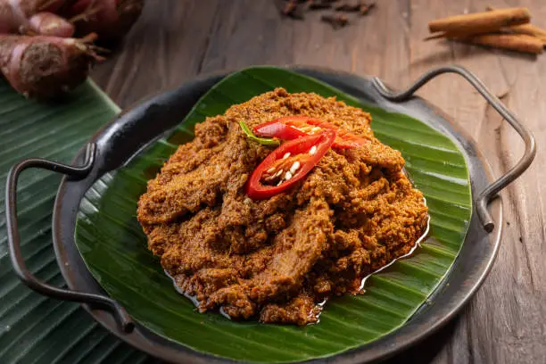
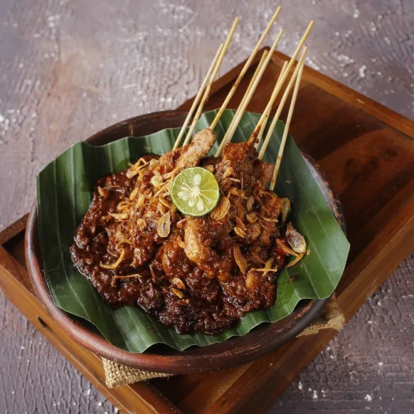

Minggu Ini: Makanan Ikonik
Trilogi Kuliner Legendaris Cita Rasa Asli Nusantara

Rendang Daging
Rendang adalah makanan khas Minangkabau dari Sumatera Barat yang terkenal dengan cita rasa gurih, pedas, dan kaya rempah. Hidangan ini dibuat dari daging sapi yang dimasak lama bersama santan dan berbagai bumbu seperti cabai, lengkuas, serai, bawang, dan kunyit hingga bumbunya meresap sempurna. Selain lezat, rendang juga melambangkan kesabaran dan kebersamaan dalam budaya masyarakat Minang.

Sate Ayam Madura
Sate Ayam Madura adalah kuliner khas Madura yang terkenal dengan rasa gurih dan manis dari bumbu kacangnya. Hidangan ini terdiri dari potongan daging ayam yang ditusuk, kemudian dibakar di atas arang hingga harum dan matang sempurna. Biasanya sate disajikan dengan saus kacang, kecap manis, irisan bawang merah, serta lontong. Cita rasanya yang khas membuat Sate Ayam Madura menjadi salah satu makanan favorit di Indonesia.

Bakso Urat
Bakso urat adalah salah satu kuliner favorit di Indonesia yang terkenal karena teksturnya yang kenyal dan rasa gurihnya yang khas. Bakso ini terbuat dari campuran daging sapi dan urat sapi yang memberikan sensasi lebih padat saat digigit. Biasanya, bakso urat disajikan dalam kuah kaldu hangat bersama mi, bihun, tahu, serta taburan bawang goreng dan seledri. Rasanya yang lezat membuat makanan ini digemari oleh berbagai kalangan.